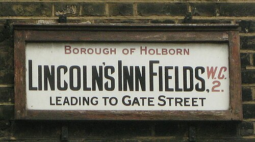

Dog Park Bar
Dog Park Bar
The Lincoln's Inn Fields park in the Holborn neighbourhood is the largest public square in London. We believe it provides suitable space for dog walking, and with its cafe, we would like to see the council will attempt to increase the dog friendliness of the park, and possibly even be inspired by the impressive Dog Park Bar at Fetch Park in Philadelphia.
|

Lincoln's Inn Fields street sign |

Picture of Lincoln's Inn Fields |
Dog Park Bar (Fetch Park in Philadelphia)
| Fetch park is opening its latest dog park bar location in Philadelphia. Dogs can roam off lead in a designated play space with a southern-inspired café serving craft cocktails and coffee, providing community spaces for humans and dogs to connect. This demonstrates that businesses can make money through providing community spaces with practical purposes. |